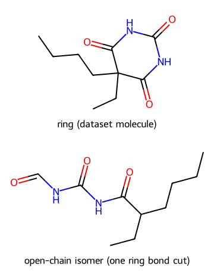

The algebraic core of the molecular descriptor (invariance, cutoff regularity, packing bound, orbit separation, Newton/Vieta multiset recovery) is machine-checked in Lean 4, sorry-free.
Abstract
A representation of a molecule or material should be invariant to the symmetries of physics, unique, continuous, efficient and general. These properties, however, are hard to satisfy at once: a descriptor invariant under the full orthogonal group $O(3)$ gives a molecule and its mirror image the same value, and so cannot distinguish enantiomers whose properties differ. Pozdnyakov showed this follows from the invariance itself, not from a lack of parameters. We show the criteria can be met at once if the geometric map is graded by the sign character of $O(3)$ and pooled multisymmetrically. We construct such a map $Φ$: its even block factors through the Gram matrix and is provably chirality-blind, while its parity-odd block of signed triple products separates enantiomers on an open dense full-measure set of interacting configurations. Two standard obstructions to uniqueness, fixed output length and componentwise pooling, are artifacts of the pooling rule, removed by multisymmetric power sums of order at most $N$. We establish uniqueness for a complete descriptor $Φ^\star$ built from the distance matrix, signed volumes and atom types, injective up to $SE(3)\times S_N$ on all configurations. $Φ^\star$ is non-constructive, however; the implemented map is the bounded-cutoff $Φ$, generically injective, pooling at order $2$, running in $O(N^2)$, or $O(N)$ with neighbor lists. The algebraic core is machine-checked in Lean 4. Because the underlying object is a cell complex, it also yields invariant, stable topological features $Ψ$ (persistent homology and a Hodge-Laplacian spectrum) encoding global ring and cage structure invisible to bounded-cutoff descriptors. The pair $(Φ,Ψ)$ feeds a compact parity-graded equivariant transformer.
Problem
Molecular representations should be symmetry-invariant, unique, continuous, efficient and general. O(3)-invariant descriptors cannot distinguish enantiomers, and descriptors that pool atom features componentwise lose uniqueness.
Approach
A geometric map Φ is built that is graded by the sign character of O(3) and pooled with multisymmetric power sums. Its even block depends only on the Gram matrix, and its parity-odd block uses signed triple products. A complete descriptor Φ* built from distances, signed volumes and atom types is shown injective up to SE(3)×S_N. Topological features Ψ (persistent homology and a Hodge-Laplacian spectrum) are added, and the pair (Φ,Ψ) feeds a parity-graded equivariant transformer. Key algebraic facts are machine-checked in Lean 4, including invariance, the C^1 cutoff junction, the neighbor packing bound, finite-group orbit separation and multiset recovery.
Results
Φ separates enantiomers on an open dense full-measure set of configurations, and Φ* is proved unique. Removing the odd block collapses enantiomer distances to zero and drops handedness accuracy to chance. The transformer reaches R² 0.83 on ESOL and 0.69 on FreeSolv, outperforming SchNet.

Figure 3: Local descriptors cannot reliably decide whether a ring is closed; persistent homology decides it exactly, and the trend is general on real molecules. From the released ESOL, FreeSolv, and lipophilicity sets we take every molecule with exactly one aliphatic ring; the qualifying molecules span all three sets (ESOL 52 , FreeSolv 38 , lipophilicity 7 ) (filter admits up to 32 heavy atoms; t
molecule
even block Φ^e
full Φ
alanine
0.0
4.04
2-butanol
0.0
5.52
lactic acid
0.0
6.15
handedness probe (5-fold CV acc.)
0.46
0.92
Enantiomer separation distance: even block alone vs full Φ